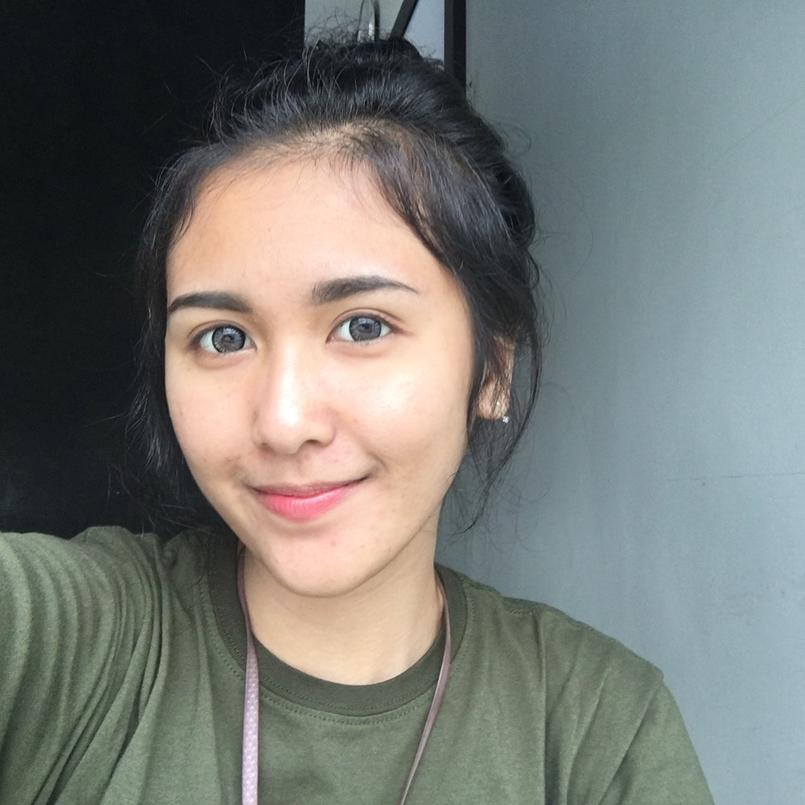

My Portfolio - Yeni Kusumaningrum
SMA YUPPENTEK 1 Tangerang
Salah satu sekolah swasta, di mana tempat saya belajar di masa SMA & mengambil penjurusan IPS. Saya pernah mengkuti ekstrakulikuler yg telah di sediakan sekolah saya (walaupun hanya 1 ekskul yg saya jalanin sih hehe).
Universitas Multimedia Nusantara
Tempat pendidikan S1 saya skrg, mengambil program studi S1 Sistem Informasi & fokus peminatan IT Governance. Saya menjalani organisasi di Kampus UMN. Pernah menjadi kepengurusan tetap & pernah mjd panitia lepas.
Moody Chips Official
Bisnis saya & 3 orang teman saya (masih bisnis lingkup kecil) yg menjual produk cemilan keripik singkong dgnn dilapisi lumeran cokelat premium, menciptakan rasa manis, smooth & tekstur crunchy.
PENGURUS SAUNG MAGAZINE 2013-2014
Saya mengikuti ekskul ini awalnya iseng aja karna untuk menambah kesibukan saya selain sekolah & les pelajaran. Saung Magazine ini merupakan majalah SMA Yuppentek 1 yg berisi berita seputar ttg kegiatan sekolah. Nahh tugas saya disini menjadi berita kegiatan sekolah & mencari konten untuk majalah ini seperti zodiac, food, travelling, etc.
PENGURUS HIMSI UMN GEN 8 2017-2018
Saya pernah menjabat sebagai kepengurusan HIMSI Generasi 8 UMN. HIMSI merupakan himpunan/wadah yg menjalankan tugas/program kerja yg telah di susun. Saya dipercaya sebagai Koordinator Mahasiswa di HIMSI Generasi 8 (2017-2018) ini. Saya mengikuti organsisasi utk menambah pengalaman saat melamar pekerjaan (semoga sih bermanfaat..)
MARKETING MOODY CHIPS 2018
Saya dipercaya sebagai Specialist Marketing & Social Media COntent utk menjalani bisnis kecil ini. Sebenernya ini hanya utk project UAS pada mata kuliah E-Business, tapi saya & teman saya ingin melanjutkan bisnis ini supaya kami berempat mendapat pendapatan sendiri, itung2 utk uang jajan hehe. Jgn lupa kunjungi website nya di www.moodychips.com / Instagram: @moodychipsofficial
About Me - Yeni Kusumaningrum
|  |
Hai semua! Nama aku Yeni Kusumaningrum, tapi nama panggilanku Yeni. Aku lahir di Tangerang pada tanggal 08 Agustus 1998, tepat jam 07.30 WIB, serba 8 banget gak sih? Hehehe. Aku punya satu kakak perempuan. Singkat cerita ttg pendidikan sekolah ku dehh. Aku awal belajar dari umur 4 tahun di TK Islam Al-Kamal. Lalu umur 6 tahun, aku sekolah di SD Negeri Periuk 2. Lanjut setelah lulus SD, aku sekolah di SMP Negeri 17 Tangerang. Untuk pendidikan SMA dan Kuliah, bisa cek di Home (My Portfolio) aku yaa :P . Singkat cerita ttg pribadi aku, banyak yg blg kalo pertama kali ketemu aku, orangnya jutek HAHAHA padahal kalo udah kenal, aku bisa dibilang easy going. |
Technical Skills
Marketing
Design
Code HTML/CSS
Contact Me - Yeni Kusumaningrum
yeni@student.umn.ac.id
Gading Serpong, ID
081211609800